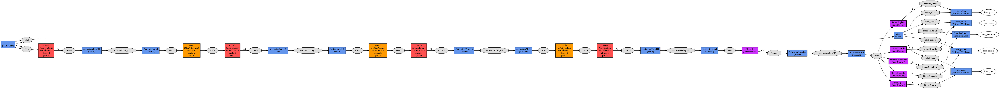

Face landmark detection can be combined with other tasks, such as gender classification, pose estimation and so on. This is usually referred as multi-task CNN learning in this context. It is not very difficult to adapt a single-task CNN to a multi-task CNN. We only need to modify the prototxt file and properly define the input and ouput data structures. Here I given an example of multi-task CNN based on VanillaCNN structure.
The network structure is given as follows:

The dataset is provided as follows:
http://mmlab.ie.cuhk.edu.hk/projects/TCDCN.html
A recent work, namely “HyperFace”, also provides very detailed analysis on how we can perform multi-task learning with CNN. The presented ideas are very straightforward and can be easily implemented, at least for the multi-task CNN part or the individual parts.
http://arxiv.org/abs/1603.01249
You can see the HyperFace network structure here. I have briefly copied the figure from the paper.
Besides, you can also check the multitask network structure.
As mentioned in the paper, the networks are modified from the Region-based CNN, which is derived from AlexNet.